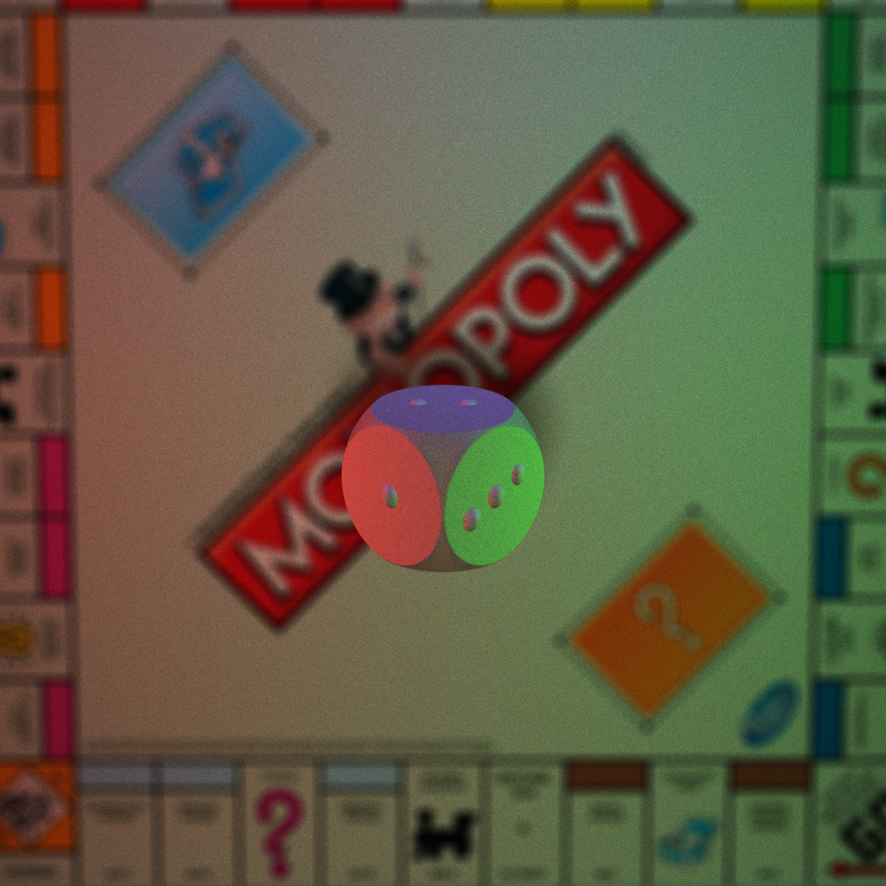
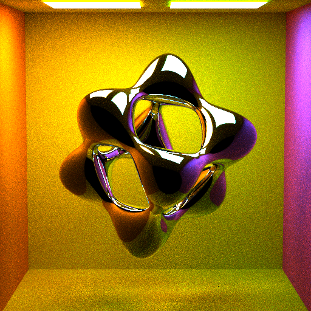
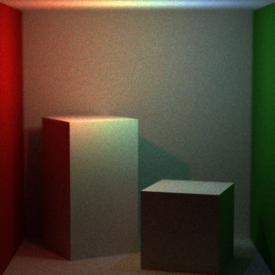
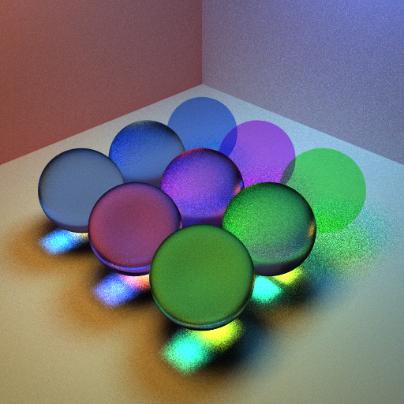
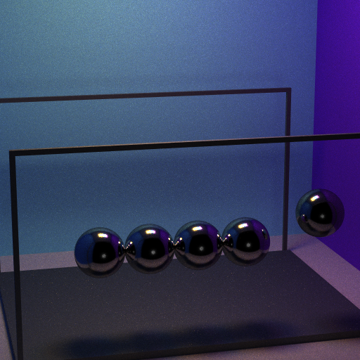
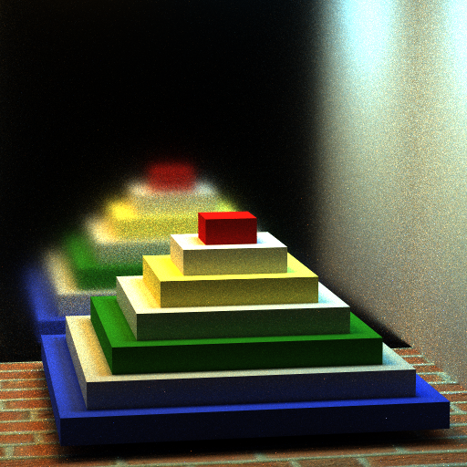

C++, GLM, Qt Creator
Description: Implemented Monte Carlo Path Tracer that includes various integration methods such as full light integrator, direct light integrator, naive integrator and photon mapper. Photon Mapper was optimized using k-d tree data structure.
Github Link: here
Rendered Images:

400spp, depth 5, Full Lighting, 1024x1024, CSG, Lens-based camera, Point Light

400spp, depth 5, Full Lighting, 512x512, , Implicit Surface : Tangled Cube

100spp, depth 5, Full Lighting, 400x400, Point Light

400spp, depth 5, Full Lighting 512x512, Transmissive Material

400spp, depth 5, Full Lighting 512x512, Mirror Material

400spp, depth 5, Full Lighting 512x512, Matte Material